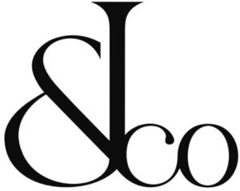

Trade Mark Journal No.2025/035 29 August 2025
WO0000001869525 (3,4,9,11,18,20,24,25,27,41)
Office of origin: Switzerland
Date of International Registration:15 January 2025
Date of designation in the UK:
15 January 2025

International priority date claimed: 15 January 2025
(Switzerland)
International priority date claimed: 15 July 2024
(Switzerland)
(817603)
- Class 3
- Perfumes; amber [perfume]; hair conditioners; aromatics [essential oils]; mouthwashes, not for medical use; cosmetics; make-up products; pencils for cosmetic use; cosmetic creams; depilatory preparations and substances; hair-removing products; body deodorants; eau de Cologne; eaux de toilette; scented waters; eau de parfum; incense; lipstick; lipstick cases; mint essence [essential oil]; extracts of flowers [perfumes]; plant extracts for cosmetic use; blush; oils for cosmetic use; oils for cleaning purposes; toiletry oils; essential oils; oils for perfumes and scents; cleansing milk for toilet purposes; tissues impregnated with cosmetic lotions; lotions for cosmetic use; after-shave lotions; mascara; beauty masks; non-medicated cleansers for intimate hygiene; deodorant soaps; shampoos; nail polish.
- Class 4
- Candles; perfumed candles; scented candles.
- Class 9
- Spectacles; goggles for sports; sunglasses; motorcycle goggles; cases for spectacles; smart glasses; parts and accessories for spectacles; spectacle lenses.
- Class 11
- Lighting apparatus; lamps for lighting; bathtubs; spa baths.
- Class 18
- Suitcases; wallets; purses (coin purses); credit card cases [wallets]; handbags; backpacks; travel bags; toiletry bags; beach bags; umbrellas.
- Class 20
- Furniture; mirrors (looking glasses); frames; wardrobes; bookcases [furniture]; sideboards; desks; settees; seats; dressing tables; chests of drawers; wooden beds; mattresses; pillows; cushions; cupboards; tables.
- Class 24
- Textile fabrics for manufacturing clothing, household and furnishing articles; textile substitutes, namely, textile substitutes made of synthetic materials; household linen; table linen not of paper; table napkins of textile; tablecloths not of paper; place mats of textile materials; bath linen with the exception of clothing; towels of textile materials; traveling rugs [lap robes]; shower curtains of textile or plastic; bed linen; eiderdowns (down coverlets); pillowcases; bed canopies; bed valances; bed blankets; bed covers; bed sheets; baby sleeping bags; curtains of textile materials; knitted fabrics; satin fabrics; linen cloths; billiard cloths; canvas for tapestry or embroidery; chenille fabric; cheviots [cloths]; cotton fabrics; cotton fabrics; crepe [fabric]; damask; drugget; fabric imitating animal skins; fabrics for textile use; felt; flannel [fabric]; frieze [cloth]; fustian; fustian; gauze [cloth]; gummed impervious cloth; haircloth [sackcloth]; jersey fabrics for clothing; jute fabrics; rayon fabrics; silk fabrics; taffeta [cloth]; tick [linen]; tulle; cloth for furniture; velvet; woolen cloths; zephyr [cloth].
- Class 25
- Clothing; shoes; headwear; shirts; tee-shirts; tank tops; sweaters; vests; jackets; coats; trousers; skirts; dresses; combinations [clothing]; belts [clothing]; furs [clothing]; gloves [clothing]; scarves; long scarves; neckties; stocking caps; socks; slippers ("chaussons"); beach shoes; ski boots; sports shoes; pajamas; underwear; bathing suits.
- Class 27
- Mats, door mats, matting, floor coverings; linoleum floor coverings; vinyl floor coverings; wall coverings of textile materials; wall hangings not of textile; wallpapers.
- Class 41
- Entertainment, sporting and cultural activities; organization and conducting of entertainment events; directing of shows; disc jockey services; discotheque services; electronic sports services; game services provided online from a computer network; gymnastic instruction; sports club services [health and fitness training]; night club services [entertainment]; orchestra services; organization of competitions [education or entertainment]; organization of balls; organization of exhibitions for cultural or educational purposes; organization of fashion shows for entertainment purposes; organization of sports competitions; presentation of live performances; provision of golf facilities; provision of information with respect to entertainment; ticket agency services [entertainment].
Jacob & Co IP Holdings LLC
Representative: Gsmart IP SA, Route de Florissant 81, CH-1206 Genève, SWITZERLAND